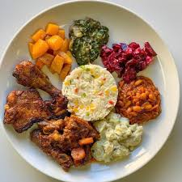

Odin Recipes
Seven colors
Home
Seven colors meal

Description
Seven Colors is a beloved South African Sunday lunch tradition known for its vibrant presentation and variety of flavors. The name comes from the rainbow-like assortment of foods on the plate, each representing a different color often including yellow rice, bright beetroot salad, golden butternut, green spinach or morogo, rich brown stews, and more.
This hearty, colorful meal is often enjoyed with family and friends, bringing together both traditional and modern elements of South African cuisine. The combination of flavors from sweet to savory, mild to spicy makes it a celebration of diversity on a plate.
Ingredients
- 2 chicken pieces per person (grilled,fried or roasted)
- 2 cups yellow rice (with turmeric or saffron)
- 1 cup cooked beetroot salad
- 1 cup butternut squash,cubed and roasted
- 1 cup creamed spinach or morogo
- 1 cup carrot and bean stew
- 1 cup potato salad
- salt,spices and pepper
- cooking oil or butter
Follow these steps
- Prepare the chicken-Seasoned with your preffered spices and fry,roast or grill until golden brown and fully cooked
- Cook the yellow rice - In a pot, cook rice with turmeric or saffron for its signature golden color. Fluff and set aside
- Make the beetroot salad - Peel, boil and dice beeeroot, then season with vinegar,sugar and a bit of salt
- Roast the butternut- Toss cubed butternut with oil,salt and pepper then roast until tender
- Prepare creamed spinach - cook spinach (or morogo) and mix with a creamy sauce made from onion , butter and cream or milk
- Cook carrot and bean stew - Saute onions add carrots and beans season and simmer until tender
- Make the potato salad - Boil potatoes cut int cubes and mix with mayonnaise seasoning and optional chopped eggs
- Plate the seven colors - Arrange each food group separately on the plate for a vibrant display